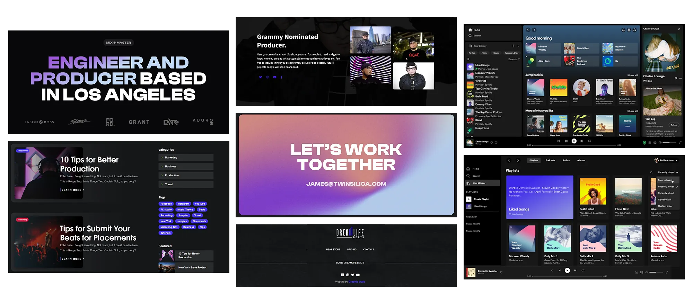
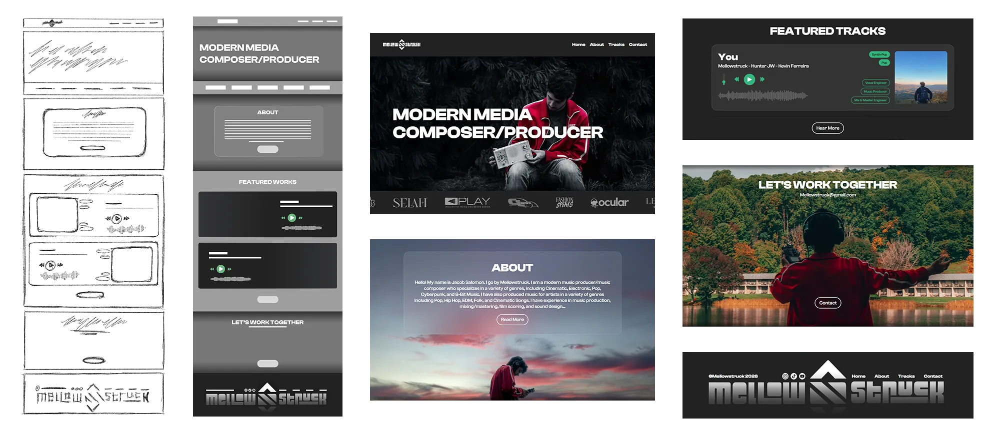
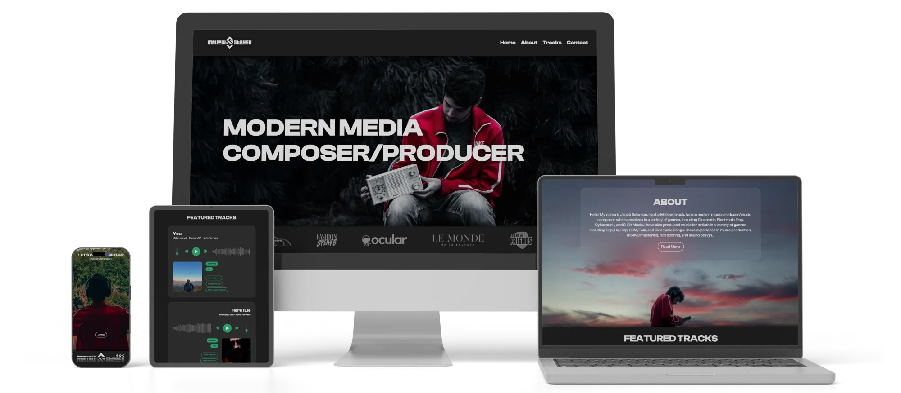

Some time after designing his logo, MellowStruck reached out again for help with a portfolio website. He needed a place where he could introduce himself, showcase his music, and direct users to his social platforms. The goal was to create a site that felt professional and effective at presenting his work, while still staying true to his brand identity and values.
MellowStruck specifically wanted to feature several of his portrait photographs throughout the site. After reviewing other producers' portfolio websites, we agreed that a simple dark theme would make those detailed, colorful images pop without losing readability.

I started by sketching multiple ideas for each section and combining them until the layout felt right. Once the structure was clear, I created wireframes to refine the design. With the framework in place, I added images, colors, and typography before coding the site in HTML and CSS.
The main design challenge was balancing a professional layout with his detailed photographs. The solution was to apply subtle vignettes to background images and separate sections with monochromatic content blocks, creating a layered effect that is visually interesting while maintaining an intuitive user experience.

The finished project is a four-page, fully responsive website designed for laptops, tablets, and mobile devices. It highlights my understanding of color theory, thoughtful font pairing, intuitive UI/UX decisions, and practical front-end development capabilities.
The website is now live and serves as MellowStruck's main platform for showcasing his music and connecting with new clients. Its clean layout makes it easy to explore his tracks, learn about his work, and access his social links. He actively uses it as his central hub for collaborators, listeners, and industry contacts.